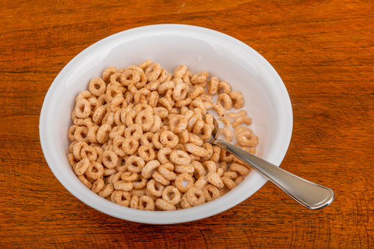

Pizza

Description
This is classic cheerios cereal with 2% milk and honey that is so simple even a child could make it
Ingredients
- 2% milk
- Honey nut cheerios
- Honey
- Bowl
Steps
- !WARNING! DO NOT POUR MILK FIRST OR YOU ARE A PSYCHOPATH
-
Grab your bowl and pour the amount of ceral you wish into the bowl
-
Pour your milk into the bowl being careful not to overflow the bowl or do it could be fun
-
Pour a table spoon of honey into the cereal and the stir with your hands
-
Enjoy your delicous cereal
Home